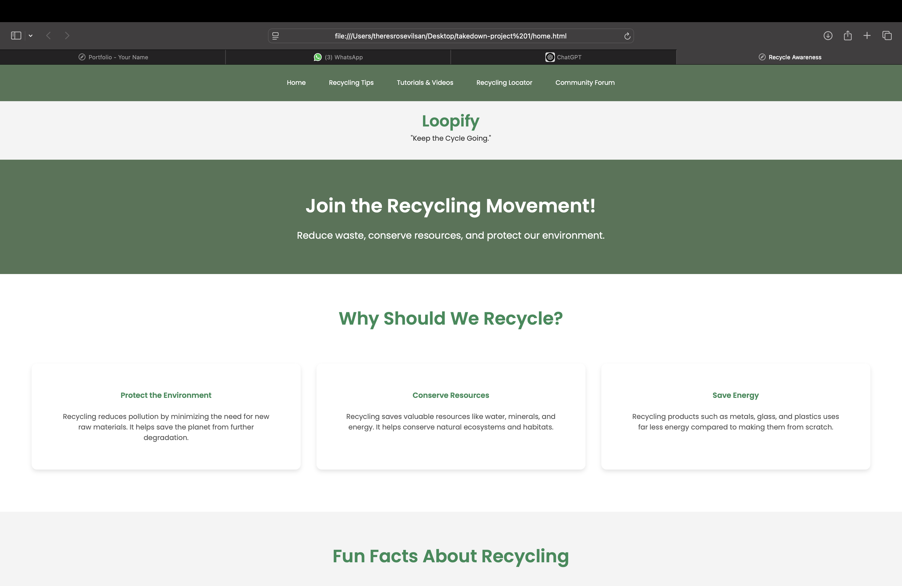
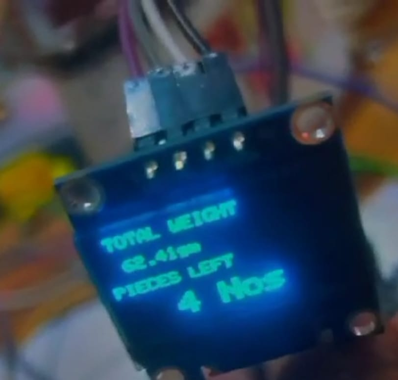

<link rel="stylesheet" href="portfolio.css" />
<section id="portfolio" class="portfolio-section">
    <nav class="nav">
        <a href="index.html" class="nav-item active">Home</a>
        <a href="about.html" class="nav-item">About</a>
        <a href="portfolio.html" class="nav-item">Portfolio</a>
       
      </nav>
  <h2 class="section-title animate-slide">My Portfolio</h2>
  <p class="portfolio-intro animate-fade">
    Here are a few projects I've worked on combining functionality with design and user-centered development.
  </p>

  <div class="portfolio-grid">
    <div class="portfolio-card animate-fade">
      
      <div class="portfolio-info">
        <h3>Loopify</h3>
        <p>Eco-conscious platform promoting sustainable living and recycling education.</p>
      </div>
    </div>

    <div class="portfolio-card animate-fade">
      
      <div class="portfolio-info">
        <h3>Inventory Management</h3>
        <p>REST API to track vehicle ownership & visits. Integrated MongoDB backend.</p>
      </div>
    </div>

    <div class="portfolio-card animate-fade">
      
      <div class="portfolio-info">
        <h3>Netflix Clone</h3>
        <p>Full-stack app mimicking Netflix features with personalized AI content.</p>
      </div>
    </div>
  </div>
</section>
